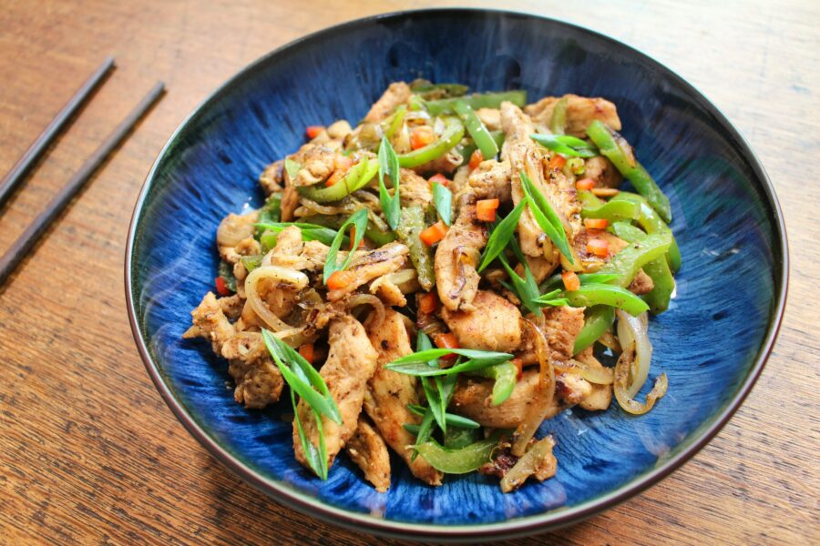

Salt & Pepper Chicken

Craving that classic Salt and Pepper Chicken but without the excess calories? Dive into a recipe that marries authentic flavours with a healthier approach. Discover a fakeaway recipe that's irresistibly tasty, tantalizingly seasoned, and surprisingly light
Ingredients
- 1/2 tsp onion powder
- 1/2 tsp garlic powder
- 1 1/2 tsp. Chinese 5-spice seasoning
- 1 tbsp soy sauce
- 500g boneless, skinless chicken breasts, sliced
- 2 tsp. coconut oil
- 1 pepper, thinly sliced
- 1 onion, thinly sliced
- 5 g garlic, minced
- 5 g ginger, minced
- 1/2 teaspoon chilli flakes (optional)
- Spring onions for garnish
Method
- Add the chicken to a bowl with the onion powder, garlic powder and 1 tsp of Chinese 5-spice seasoning and soy sauce. Mix through
- Heat the olive oil in a large frying pan over medium heat.
- Once the frying pan is hot, add 1 tsp of coconut oil and the seasoned chicken slices. Cook for 6-7 minutes, stirring occasionally, until the chicken is cooked through and no longer pink in the middle. Remove the chicken from the frying pan and set it aside.
- In the same frying pan, add the second tsp of coconut oil, the pepper and onion. Cook for 5-7 minutes, or until the vegetables are softened.
- Add the garlic, ginger, the remaining ½ tsp Chinese 5-spice and chilli flakes (if using) to the frying pan and cook for another 30 seconds to a minute.
- Add the cooked chicken slices back to the frying pan with the vegetables. Stir to combine.
- Cook for another 2-3 minutes, or until the chicken is heated through.
- Sprinkle the chopped spring onions over the top of the chicken before serving.
Back to main page